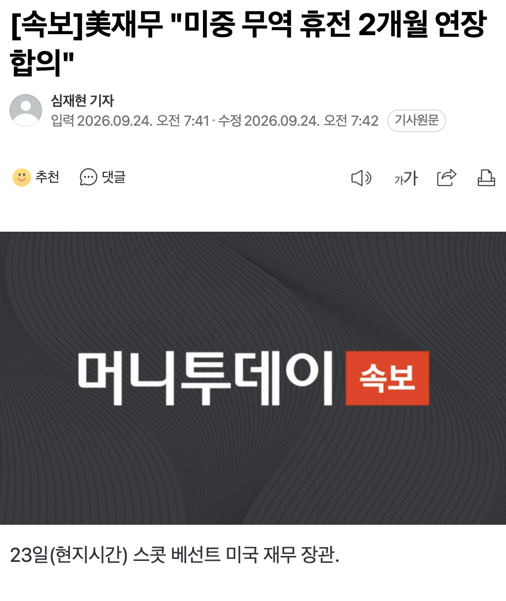

🇺🇸 [속보]美재무 "미중 무역 휴전 2개월 연장 합의" 🇨🇳
댓글
언제 뭐 했음?
중국 상대로 관세 더 뜯겠다는거임 ㅋㅋ
관세 100프로(안먹임)
아직도 이런애가있네 ㅋㅋㅋ
중국에서 수입하는 업자 상대로 관세를 받는거임 보통 수입업자들은 미국쪽임
관세를 부과하는건 수입비용을올려 소비 수요을 줄여 민간이 수입을 못하게 하는거지 세금획득이 목적이 아님
그런데 필수재의 경우는 관세가 획득이 되는데 이것은 소비자애게 전가되기 때문에 미국 소비자가 내게되는것이 그리고 인플레이션을 전이 가속화해서 그건또 다른의미의 세금이 부과되는건데 그건 또 미국인에게 부과됨
싸우고 섹스하고 싸우고 섹스하고 싸우고 섹스하고
미국 이새끼들 결국엔 동맹국들만 삥뜯음 ㅋㅋㅋㅋㅋ 시발럼들
트럼프 카드가 없어요~
호잰가요?
다른 나라들하곤 전쟁중인게 유머인 부분 ㅋㅋ 사실 전쟁도 아니고 걍 일방적으로 때리는데 중국은 쫄리니까 휴전이라노 연장하자노 중 ㅋㅋ
역시 레드팀이야
역시 미중합국 ㄷㄷ
화해하지 않을래? (지들 싸움에 새우등 터진 국가들 외면하며)
곧 미중 행사 된다 2056년 78회 무역휴전 협의 기념식 같은
ㅋㅋㅋ 지랄들을 한다
아직도 저새끼 저지랄 생쇼 하는 거 보고 믿는 저능아가 잇긴한가
ㅅㅂ 위에 잇네
믿고안믿고가 중요한게아닌듯
한마디한마디에 주가가 요동친다고!!ㅜㅜ
롱인가!!! 풀롱은아님
무역 휴전이 뭐냐 대체